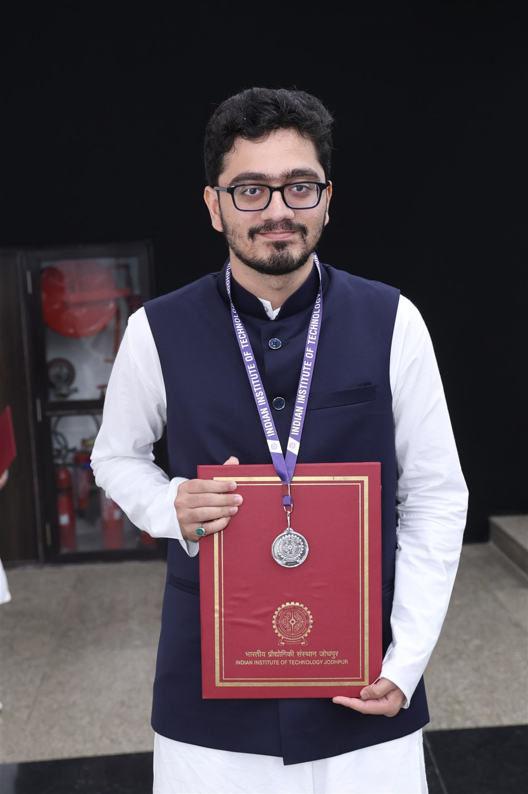

Foundation Model Priors Enhance Object Focus in Feature Space for Source-Free Object Detection
Accepted at CVPR 2026
Using foundation-model priors to improve object focus in feature space for source-free object detection.
I am a Research Intern at Microsoft Research India, working with Dr. Vineeth N. Balasubramanian on agentic and multimodal AI.
I graduated from the Indian Institute of Technology Jodhpur in 2026 with a B.Tech. in Artificial Intelligence and Data Science. I was the branch topper and received the Institute Silver Medal, graduating with a CGPA of 9.05/10.
My research interests span computer vision and vision-language models, particularly object detection, multimodal learning, and VLM debiasing. I also explore domain generalization, continual learning, machine unlearning, and mechanistic interpretability.
Previously, I worked with Dr. Vineeth N. Balasubramanian at IIT Hyderabad on source-free object detection. I was also an undergraduate research assistant at FADE Lab, IIT Jodhpur, advised by Dr. Pratik Mazumder. My work spanned machine unlearning, class-incremental learning, and domain generalization.

Accepted at CVPR 2026
Using foundation-model priors to improve object focus in feature space for source-free object detection.